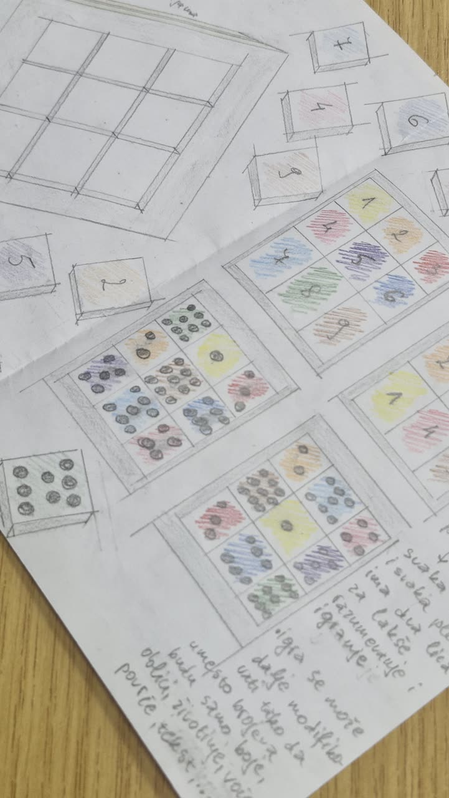
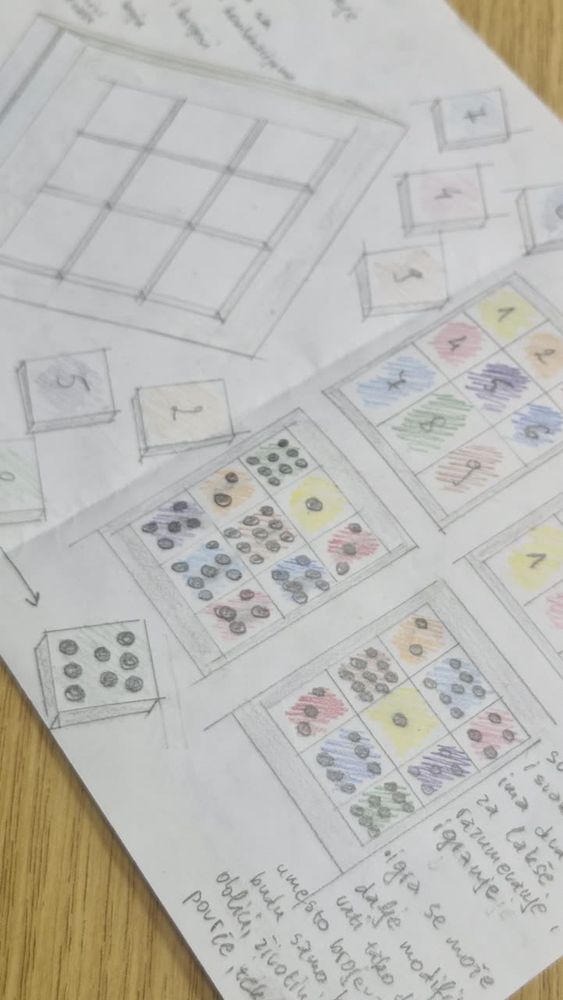
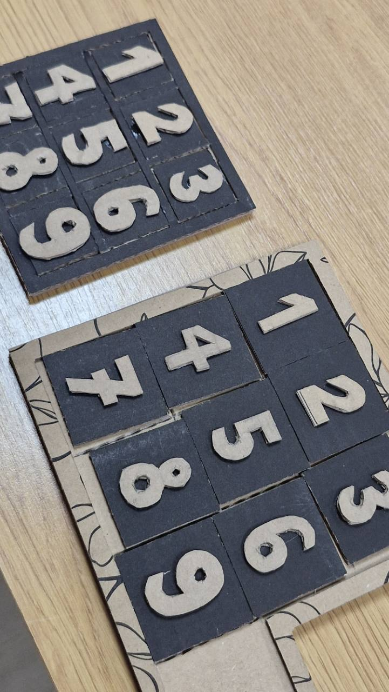
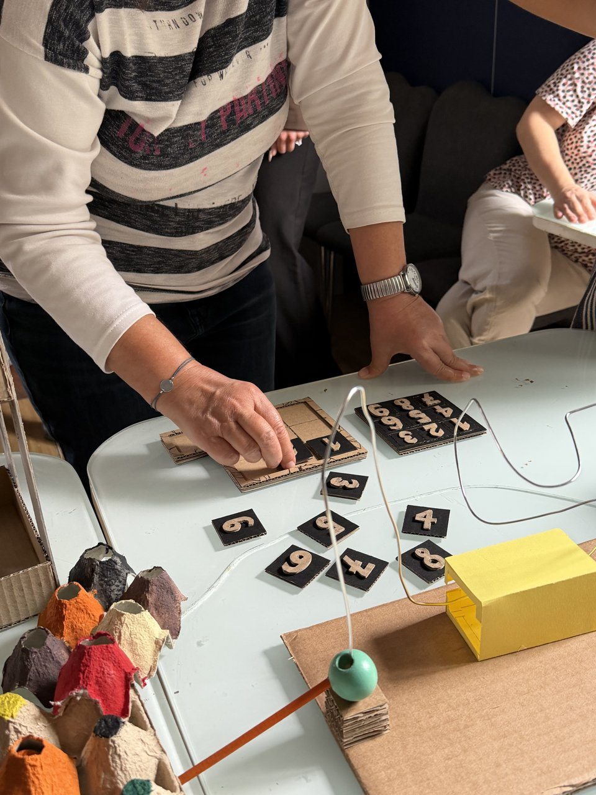
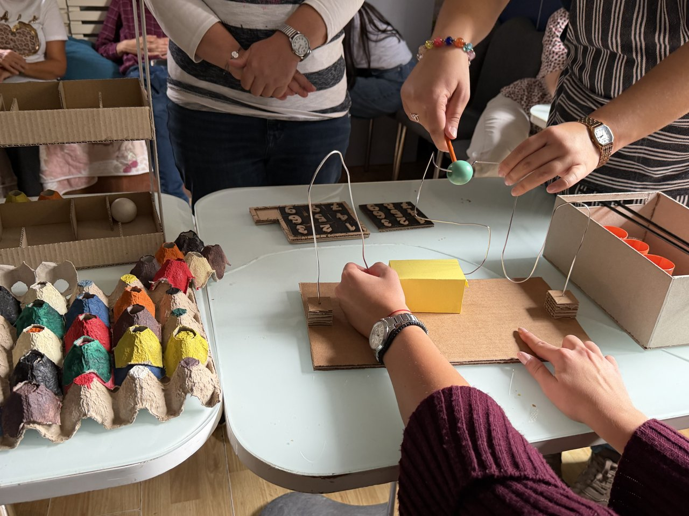

Radovi i primeri / Čas 3
Brojkice
Nađa Stanić151/24
Čas 3
2 prikaza rada · Gradivo časa




Čas 2
Kartonske ploče sa tamnim kvadratnim poljima i svetlim, izdignutim ciframa. Fotografija beleži fizički raspored elemenata.


Isprobano u udruženju · 09.10.2026.
Pločice sa reljefnim brojevima slagane su i razvrstavane po stolu; kontakti su bili kraći i mirniji nego kod ostalih radova — slaganje bez utrke.



